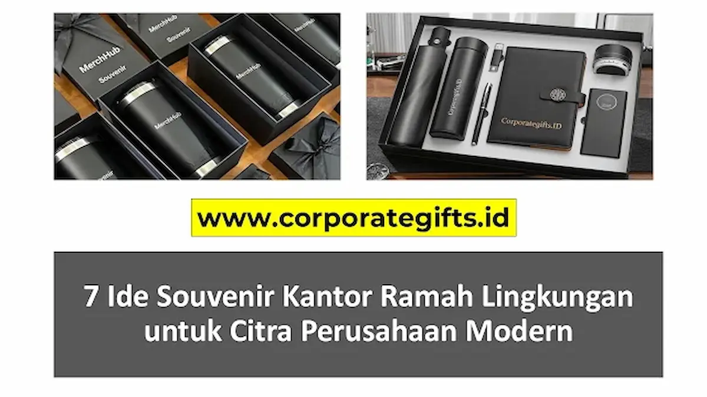

Corporate Gifts ID - Souvenir kantor ramah lingkungan (eco-friendly) adalah merchandise perusahaan yang diproduksi menggunakan bahan daur ulang, material berkelanjutan, atau bahan alami yang mudah terurai. Memilih cinderamata go green seperti totebag RPET, tumbler bambu, maupun alat tulis daur ulang merupakan strategi Corporate Social Responsibility (CSR) cerdas yang tidak hanya mengurangi limbah sampah plastik, tetapi juga sangat efektif membangun reputasi perusahaan yang bertanggung jawab dan modern di mata klien maupun karyawan.
Berikut adalah 7 ide souvenir go green yang fungsional, bernilai estetika tinggi, dan siap memperkuat citra kredibilitas institusi Anda.
Poin Kunci Souvenir Ramah Lingkungan:
- Representasi Komitmen ESG: Menegaskan kepedulian nyata perusahaan terhadap prinsip keberlanjutan lingkungan hidup secara otentik.
- Storytelling Bermakna: Memberikan narasi inspiratif di balik produk, seperti inovasi pemanfaatan ampas kopi atau botol plastik daur ulang.
- Preferensi Generasi Modern: Menjawab ekspektasi mitra bisnis, klien, serta talenta muda milenial dan Gen Z yang sadar lingkungan.
- Subtle & Natural Branding: Teknik grafir laser pada kayu atau bambu memberikan impresi visual yang elegan tanpa penggunaan tinta kimia berbahaya.
- Investasi Reputasi Berkelanjutan: Menghasilkan nilai Return on Investment (ROI) promosi jangka panjang melalui produk fungsional harian.
Mengapa Beralih ke Souvenir 'Go Green' adalah Langkah Cerdas?
Di era ekonomi sirkular saat ini, citra korporasi tidak lagi hanya diukur dari kinerja keuangan semata, melainkan juga dari kontribusi nyatanya terhadap pelestarian bumi. Beralih ke merchandise ramah lingkungan memberikan keunggulan kompetitif strategis:
- Mencerminkan Nilai Inti Perusahaan: Secara otentik membuktikan bahwa organisasi Anda aktif menjalankan praktik bisnis hijau dan etis.
- Meningkatkan Persepsi Positif Publik: Brand Anda dipandang sebagai bagian dari solusi penanganan krisis iklim global, bukan kontributor sampah plastik.
- Memiliki Kekuatan Narasi (Storytelling): Setiap item daur ulang menyimpan cerita edukatif yang menarik saat diserahkan kepada mitra bisnis.
- Relevan dengan Tren Konsumen: Klien dan investor masa kini memiliki preferensi kuat untuk bermitra dengan entitas yang menerapkan standar ESG berkelanjutan.
7 Ide Souvenir Kantor Ramah Lingkungan yang Berkesan
Berikut tujuh rekomendasi produk cinderamata ramah lingkungan yang paling diminati untuk kebutuhan promosi kantor, seminar, maupun corporate gift set:
1. Totebag Lipat dari Bahan Daur Ulang (RPET)
Tinggalkan penggunaan kantong plastik atau goodie bag spunbond sekali pakai. Pilihlah tote bag berbahan RPET (Recycled Polyethylene Terephthalate) yang diproduksi dari serat daur ulang botol air mineral. Tas ini berbobot ringan, kuat menahan beban, mudah dilipat ke ukuran saku, dan secara konkret mengurangi limbah plastik di tempat pembuangan akhir.
2. Set Sedotan Bambu dan Stainless Steel Reusable
Gerakan pengurangan sedotan plastik sekali pakai tetap menjadi kampanye hijau yang relevan. Paket perlengkapan sedotan berbahan stainless steel food grade atau bambu alami, lengkap dengan sikat pembersih kawat dan pouch kain blacu berlogo, merupakan hadiah praktis yang selalu dibawa bepergian oleh para pekerja aktif.
3. Notebook & Pulpen dari Kertas Daur Ulang Kraft
Alat tulis kantor merupakan perlengkapan esensial harian. Kombinasi buku agenda bercover hardboard kraft daur ulang dengan pulpen berbadan kertas daur ulang mengirimkan sinyal kuat mengenai konsistensi kepedulian lingkungan instansi Anda dalam setiap aktivitas rapat kerja.

Pilihan ragam souvenir kantor ramah lingkungan berbahan kayu, bambu, ampas kopi, dan serat kertas daur ulang.
4. Cangkir Ampas Kopi (Coffee Husk Mug)
Inovasi material komposit berbasis ampas kopi (coffee husk) menjadi salah satu opsi merchandise terunik masa kini. Selain memanfaatkan residu limbah perkebunan kopi, cangkir ini memiliki aroma alami yang khas, tekstur permukaan yang unik, serta cerita edukatif yang sangat menarik saat disajikan di meja kerja klien.
5. Pensil dan Pulpen Tanam (Plantable Seed Pencil)
Konsep nir-sampah (zero waste) yang sangat interaktif! Pada bagian pangkal pensil atau pulpen ini disematkan kapsul berisi benih tanaman seperti tomat, cabai, atau bunga matahari. Begitu pensil habis terpakai, ujungnya dapat langsung ditancapkan ke pot tanah untuk tumbuh menjadi tanaman hijau baru.
6. Set Peralatan Makan Kayu Alami (Cutlery Set)
Peralatan makan pribadi sangat dibutuhkan oleh karyawan yang gemar membeli makanan di luar kantor. Satu set sendok, garpu, dan sumpit berbahan kayu jati atau bambu halus yang dikemas dalam pouch kain serut efektif mengeliminasi pemakaian alat makan plastik sekali pakai.
7. Tumbler dari Material Berkelanjutan
Wadah minum adalah merchandise fungsional dengan tingkat retensi pemakaian harian tertinggi. Untuk sentuhan ramah lingkungan yang mewah, Anda dapat memilih tumbler stainless steel berbalut bambu alami atau tumbler berbahan komposit wheat straw yang higienis, aman digunakan, dan bersumber dari material terbarukan.
Tabel Perbandingan Material Souvenir Ramah Lingkungan
Untuk membantu Anda memilih material yang paling sesuai dengan anggaran dan target penerima, berikut tabel perbandingan karakteristik produk:
| Material Souvenir | Karakteristik & Keunggulan | Rekomendasi Teknik Branding | Kategori Penggunaan |
|---|---|---|---|
| Bambu & Kayu Alami | Cepat tumbuh, kuat, memiliki serat kayu eksklusif, biodegradable | Laser Engraving (Grafir Laser) | Executive Gift, Tumbler, Cutlery Set |
| Kain Daur Ulang RPET | Mengurangi sampah botol plastik, tahan air, ringan, kuat | Sablon Ramah Lingkungan / Heat Transfer | Totebag Lipat, Pouch, Ransel Seminar |
| Kertas Daur Ulang Kraft | Alami, mudah terurai, bernuansa klasik vintage, hemat biaya | Cetak Offset / Sablon Water-based | Agenda Kerja, Blocknote, Pulpen Kertas |
| Ampas Kopi & Wheat Straw | Pemanfaatan limbah pertanian organik, bertekstur unik, food grade | Pad Printing / Grafir Halus | Cangkir Kopi, Lunch Box Meja Kerja |
Tips Kustomisasi Logo pada Souvenir Eco-Friendly
Agar pesan keberlanjutan tetap selaras, metode pencetakan identitas brand juga wajib diperhatikan secara cermat:
- Prioritaskan Laser Engraving: Metode grafir laser bekerja tanpa menggunakan tinta kimiawi sehingga sangat ramah lingkungan. Hasilnya menyatu dengan serat kayu atau bambu, menghasilkan tampilan yang sangat prestisius dan anti-luntur.
- Gunakan Tinta Berbahan Dasar Air (Water-based): Untuk produk berbahan tekstil seperti tote bag katun atau kanvas organik, pilihlah sablon berbahan dasar air yang aman bagi ekosistem.
- Terapkan Desain Minimalis: Hindari logo berukuran terlalu dominan. Logo berukuran proporsional memberikan kesan eksklusif dan mendorong penerima untuk bangga mengenakannya setiap hari.
Menemukan Partner Pengadaan yang Tepat
Tidak semua vendor cinderamata memiliki rantai pasok material ramah lingkungan yang teruji kualitas dan standar keamanannya. Bekerja sama dengan penyedia terpercaya di Corporate Gifts ID memastikan setiap proses produksi, mulai dari seleksi bahan baku ramah lingkungan, kustomisasi logo presisi, hingga pengemasan kardus daur ulang, berjalan secara profesional sesuai standar korporat Anda.
Kesimpulan: Hadiah yang Memberi Dampak Positif
Memilih souvenir kantor ramah lingkungan merupakan investasi berharga bagi reputasi masa depan brand Anda. Langkah ini membuktikan secara nyata bahwa institusi Anda tidak hanya berorientasi pada pencapaian target bisnis, tetapi juga memiliki komitmen moral dalam menciptakan ekosistem bumi yang lebih sehat dan lestari.
Kreasikan konsep merchandise berkelanjutan perusahaan Anda bersama katalog terkurasi di CorporateGifts.ID sekarang juga!
Pertanyaan Umum (FAQ) Seputar Souvenir Ramah Lingkungan

Ditulis oleh: Arinda Zakia
Senior Corporate Gifting Specialist & Content StrategistArinda Zakia adalah konsultan pengadaan souvenir korporat dan kurasi merchandise premium di CorporateGifts.ID. Berpengalaman lebih dari 8 tahun dalam membantu berbagai perusahaan nasional dan multinasional merancang hadiah korporat berbasis keberlanjutan dan ESG.
Lihat Profil Lengkap & Panduan Lainnya